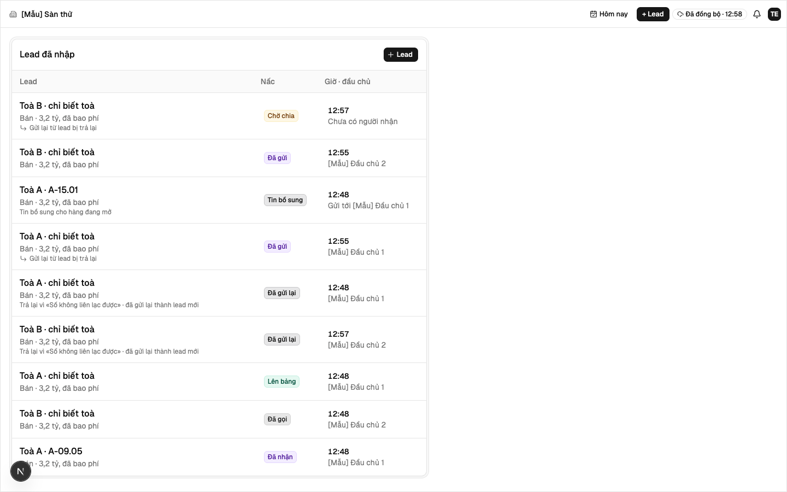

Telesales theo dõi lead đã nhập qua bốn nấc Đã gửi → Đã nhận → Đã gọi → Lên bảng, thấy lead bị trả lại kèm «Sửa số và gửi lại»; không thấy hàng
Vì sao làm
Màn P0 (L1 cột phải, L5) Số đo hai tuần thử gần nhất (Tham chiếu §11): Số ngày lead → Sẵn sàng bán — ngưỡng số đặt trước khi thử.
Đã hứa
- AC-1 — Given lõi của `packages/core`, When tính nấc của một lead từ dữ kiện của nó, Then ra đúng một trong bốn nấc hay bốn
- AC-2 — Given người đã nhập lead, When gọi `GET /api/v1/leads`, Then nhận đúng các lead chính mình nhập trong sàn đang làm,
- AC-3 — Given telesales nhập một lead qua `POST /api/v1/leads`, When lead đi qua nhịp chia của hàng 25, đầu chủ nhận, ghi
- AC-4 — Given lead đã về một đầu chủ, When gọi `POST /api/v1/leads/{id}/return`, Then đầu chủ của lead trả lại được khi lead
- AC-5 — Given lead đã trả lại, When nhịp của hàng 25 chạy ở các mốc hạn, Then lead không được chia lại, không sinh lời báo
- AC-6 — Given lead đã trả lại, When người nhập gọi `POST /api/v1/leads/{id}/resubmit` với số mới, Then máy tạo một lead mới
- AC-7 — Given lead gửi lại không trùng, When nhịp của hàng 25 chạy, Then lead mới được đóng dấu và chia theo cách chia của
- AC-8 — Given các hàng của bộ mẫu dựng qua đường ghi thật, When tính lúc lên bảng của lead, Then chỉ hàng thoả cả ba điều —
- AC-9 — Given hai sàn A và B, When người của B gọi `GET /api/v1/leads`, trả lại, gửi lại trên lead của A, và vai API gọi
- AC-10 — Given telesales của sàn mẫu đã đăng nhập, When mở Hôm nay ở khổ 1440 và 375, Then thấy danh sách lead đã nhập theo
- AC-11 — Given màn của AC-10 đã hiện lead của sàn mẫu, When đọc toàn bộ chữ trên màn và mọi phản hồi mạng của màn, Then
- AC-12 — Given bộ mẫu có hai telesales, lead lên bảng và một chuỗi gửi lại, When chạy hàm báo cáo `app.lead_board_metric`
Thiết kế
docs/superpowers/specs/2026-11-01-lead-bon-nac-design.md
Quyết định
- 2026-11-01 · Máy · approach · S1 — Đã tra tri thức: Telesales theo dõi lead đã nhập qua bốn nấc Đã gửi → Đã nhận → Đã gọi → Lên bảng, thấy lead bị trả lại kèm «Sửa số và gửi lại»; không thấy hàngKho đã khai tri_thuc — bước thiết kế tra trang trước khi chọn.
- 2026-11-01 · Máy · approach · S1 — Danh sách lead đã nhập và bốn nấc nằm ở Hôm nay của telesales (màn dựng ở leads/mine, today/page.tsx rẽ nhánh cho vai telesales), mở được cả ở /leads/mine.Tham chiếu §10 đặt «Lead đã nhập và bốn nấc» ở Hôm nay của telesales, P0; telesales chỉ có nhà Hôm nay; AC-10.
- 2026-11-01 · Máy · approach · S1 — «Trả lại» là việc của đầu chủ khi số chủ không liên lạc được, một lý do «Số không liên lạc được»; telesales thấy dòng trả lại kèm «Sửa số và gửi lại».Ghi chép kiến trúc thông tin 29/10 §12 tả đúng lối này; câu giao hàng 27; AC-4, AC-6.
- 2026-11-01 · Máy · approach · S1 — «Sửa số và gửi lại» tạo một lead mới chép các mục của lead cũ với số mới; lead cũ mang dấu đã gửi lại trỏ lead mới.Lead mới chạy lại kiểm trùng và mang dấu vết số mới, lịch sử trả lại giữ nguyên; AC-6.
- 2026-11-01 · Máy · approach · S1 — Chỉ trả lại được lead chưa ghi gọi lần đầu.Đã ghi gọi lần đầu là đã liên lạc được số; AC-4.
- 2026-11-01 · Máy · approach · S1 — Lead đã trả lại rời việc của đầu chủ: không chia lại, không báo quá hạn, không tính lead đang mở, không neo chủ nhà cho lead mới cùng số.Thay bằng create or replace bốn hàm của hàng 25 và lead_dedupe_facts, cùng chữ ký; AC-5.
- 2026-11-01 · Máy · approach · S1 — Hàng chạy hạng T3 dù lộ trình ghi T2.Trả lại và lên bảng cần cột, hàm mới ở cơ sở dữ liệu (migration 015) — packages/db/** thuộc t3_paths; AC-4..AC-9.
- 2026-11-01 · Máy · approach · S1 — Hỏi-1 — «Lên bảng» khi chưa có mã nối lead với hàng: khuyến nghị suy từ hàng của chính đầu chủ của lead, chủ nhà cùng dấu vết số, chuyển Sẵn sàng bán kể từ lúc nhập lead.Chưa có lối nào tạo hàng từ lead (hàng 17, 22); câu giao đòi nấc Lên bảng; số đo §11 «Số ngày lead → Sẵn sàng bán»; AC-3, AC-8.
- 2026-11-01 · Máy · approach · S1 — Hỏi-2 — lead gửi lại đi về đâu: khuyến nghị đi như lead mới — kiểm trùng, không trùng thì chia theo cách chia của sàn, hạn tính lại.Đầu chủ đã trả lại không gọi được số cũ; số mới có thể đã có đầu chủ khác giữ; AC-6, AC-7.
- 2026-11-01 · Máy · descope · S1 — KHÔNG dựng nút «Trả lại» trên màn của đầu chủ — Hôm nay của đầu chủ là hàng 22; hàng này có lối API.Lộ trình giao Hôm nay của đầu chủ cho hàng 22.
- 2026-11-01 · Máy · descope · S1 — KHÔNG gắn lead với hàng bằng mã khi đầu chủ tạo hàng từ lead — việc của hồ sơ căn và Hôm nay.Hàng 25 đã khai lead thành hàng là việc của hàng 22/17.
- 2026-11-01 · Máy · descope · S1 — KHÔNG dựng lại ô nhận lead trên điện thoại — màn của hàng này đọc được ở 375 nhưng ô nhận trên điện thoại là P1 riêng.Tham chiếu §10 xếp ô nhận lead trên điện thoại ở P1.
- 2026-11-01 · Máy · descope · S1 — KHÔNG báo telesales khi lead đổi nấc, KHÔNG có lý do trả lại thứ hai.Thông báo lên máy chưa có hạ tầng (hàng 26 chỉ cho đầu chủ); lý do khác cần màn của đầu chủ.
- 2026-11-01 · Máy · approach · S1 — Hỏi-3 — khối của màn «Lead đã nhập» (ADR-0019, trang ba lối): khuyến nghị lối ReUI list-11 — bảng ba cột Lead · Nấc · Giờ và đầu chủ, Badge nấc một cột, điện thoại thu hai cột; dòng trả lại giữ đúng thứ tự giờ.list-11 là khối đích đã chọn theo lô ở vo-va-ia.md; tám lead mẫu vừa một màn 1440 không cuộn, đọc lướt cột nấc; cài rồi thành lối «Trong kho» cho màn sau; AC-10.
- 2026-11-01 · Máy · approach · S1 — Hỏi-4 — đầu chủ trả lại lead vì số không liên lạc được tới lúc nào: khuyến nghị trả lại được cho tới khi lead Lên bảng, kể cả khi đã ghi gọi lần đầu; lead đã Lên bảng thì không.Phản biện P0: mốc gọi lần đầu của hàng 25 chỉ ghi một lần gọi để khỏi bị báo trưởng nhóm, không nói chủ nhà đã nghe máy — chặn sau mốc này làm lead kẹt ở «Đã gọi» và telesales không bao giờ thấy «Sửa số và gửi lại»; AC-4, E4.
- 2026-11-01 · Máy · approach · S1 — Số đo «Số ngày lead → Sẵn sàng bán» lấy bằng hàm báo cáo toàn sàn `app.lead_board_metric(sàn, từ, đến)` chỉ chạy được bằng kết nối chủ, trả mã lead, lúc nhập lead đầu chuỗi, lúc lên bảng và số ngày — không số chủ, không mã hàng.Phản biện P1: `app.lead_board_dates` chỉ trả lead của người gọi nên không gộp được cả sàn; hàm báo cáo dùng chung một định nghĩa lên bảng với hàm của telesales; Đường đo, E12.
- 2026-11-01 · Người · seal · gate1 —
- 2026-11-01 · Người (Manh Phan) · seal · gate1 — duyệt kế hoạch
- 2026-11-01 · Máy · fix · S3 — Ca của E2 thêm trưởng nhóm: lối «lead của tôi» của trưởng nhóm phải ra rỗng khi trưởng nhóm chưa nhập lead nào; chiều đỏ của E3 đo bằng cách bỏ cả điều kiện loại sự kiện lẫn «sang Active», không chỉ «sang Active».Phá-thử ở S3: bỏ lọc người nhập không làm telesales khác thấy thêm dòng vì luật đọc của bảng đã che, chỉ trưởng nhóm lộ ra; hàng Incomplete chưa có sự kiện đổi trạng thái nên bỏ riêng điều kiện «Active» không đổi kết quả (E2, E3 trong evals.yaml).
Bằng chứng
Các eval
| Eval | Tiêu chí | Loại | Verdict | run_id | verified_at |
|---|---|---|---|---|---|
| E1 | AC-1 | test | PASS | minted-lead-bon-nac-E1-r1 | 2026-11-01T05:53:56Z |
| E2 | AC-2 | test | PASS | minted-lead-bon-nac-E2-r1 | 2026-11-01T05:53:56Z |
| E3 | AC-3 | test | PASS | minted-lead-bon-nac-E3-r1 | 2026-11-01T05:53:56Z |
| E4 | AC-4 | test | PASS | minted-lead-bon-nac-E4-r1 | 2026-11-01T05:53:56Z |
| E5 | AC-5 | test | PASS | minted-lead-bon-nac-E5-r1 | 2026-11-01T05:53:56Z |
| E6 | AC-6 | test | PASS | minted-lead-bon-nac-E6-r1 | 2026-11-01T05:53:56Z |
| E7 | AC-7 | test | PASS | minted-lead-bon-nac-E7-r1 | 2026-11-01T05:53:56Z |
| E8 | AC-8 | test | PASS | minted-lead-bon-nac-E8-r1 | 2026-11-01T05:53:56Z |
| E9 | AC-9 | test | PASS | minted-lead-bon-nac-E9-r1 | 2026-11-01T05:53:56Z |
| E10 | AC-10 | ui-check | PASS | E10-ui-2026-11-01 | 2026-11-01T05:53:56Z |
| E11 | AC-11 | ui-check | PASS | E11-lead-bon-nac-20261101 | 2026-11-01T05:53:56Z |
| E12 | AC-12 | test | PASS | minted-lead-bon-nac-E12-r1 | 2026-11-01T05:53:56Z |
Chi tiết từng eval
PASS E1 · test
AC-1: Given lõi của `packages/core`, When tính nấc của một lead từ dữ kiện của nó, Then ra đúng một trong bốn nấc hay bốn
npm test -w @quy-hang/core ℹ duration_ms 211.578416
PASS E2 · test
AC-2: Given người đã nhập lead, When gọi `GET /api/v1/leads`, Then nhận đúng các lead chính mình nhập trong sàn đang làm,
npm run db:migrate && npm run db:test ℹ duration_ms 6595.371917
PASS E3 · test
AC-3: Given telesales nhập một lead qua `POST /api/v1/leads`, When lead đi qua nhịp chia của hàng 25, đầu chủ nhận, ghi
npm run db:migrate && npm run db:test ℹ duration_ms 6595.371917
PASS E4 · test
AC-4: Given lead đã về một đầu chủ, When gọi `POST /api/v1/leads/{id}/return`, Then đầu chủ của lead trả lại được khi lead
npm run db:migrate && npm run db:test ℹ duration_ms 6595.371917
PASS E5 · test
AC-5: Given lead đã trả lại, When nhịp của hàng 25 chạy ở các mốc hạn, Then lead không được chia lại, không sinh lời báo
npm run db:migrate && npm run db:test ℹ duration_ms 6595.371917
PASS E6 · test
AC-6: Given lead đã trả lại, When người nhập gọi `POST /api/v1/leads/{id}/resubmit` với số mới, Then máy tạo một lead mới
npm run db:migrate && npm run db:test ℹ duration_ms 6595.371917
PASS E7 · test
AC-7: Given lead gửi lại không trùng, When nhịp của hàng 25 chạy, Then lead mới được đóng dấu và chia theo cách chia của
npm run db:migrate && npm run db:test ℹ duration_ms 6595.371917
PASS E8 · test
AC-8: Given các hàng của bộ mẫu dựng qua đường ghi thật, When tính lúc lên bảng của lead, Then chỉ hàng thoả cả ba điều —
npm run db:migrate && npm run db:test ℹ duration_ms 6595.371917
PASS E9 · test
AC-9: Given hai sàn A và B, When người của B gọi `GET /api/v1/leads`, trả lại, gửi lại trên lead của A, và vai API gọi
npm run db:migrate && npm run db:test ℹ duration_ms 6595.371917
PASS E10 · ui-check
AC-10: Given telesales của sàn mẫu đã đăng nhập, When mở Hôm nay ở khổ 1440 và 375, Then thấy danh sách lead đã nhập theo
PASS E11 · ui-check
AC-11: Given màn của AC-10 đã hiện lead của sàn mẫu, When đọc toàn bộ chữ trên màn và mọi phản hồi mạng của màn, Then


PASS E12 · test
AC-12: Given bộ mẫu có hai telesales, lead lên bảng và một chuỗi gửi lại, When chạy hàm báo cáo `app.lead_board_metric`
npm run db:migrate && npm run db:test ℹ duration_ms 6595.371917
Eval không phân biệt (Analyst)
Vòng verify
- Round 1: mọi eval xanh, không eval nào lỗi. Không có mục chờ người chấm.
Tài nguyên
| Khối | Tác tử | Token đầu ra |
|---|---|---|
| S4 round 1 | 17 | 79.692 |
1 lượt chấm · tổng 79.692 token
Giới hạn và ngoài hợp đồng
- Nút «Trả lại» trên màn của đầu chủ — Hôm nay của đầu chủ là hàng 22; hàng này có lối API.
- Hôm nay của đầu chủ, trưởng nhóm, đầu khách — hàng 22, 42, 32; `today/page.tsx` chỉ rẽ nhánh cho vai telesales.
- Gắn lead với hàng bằng mã khi đầu chủ tạo hàng từ lead — hồ sơ căn và Hôm nay của đầu chủ (hàng 17, 22).
- Thông báo cho telesales khi lead đổi nấc — hàng 26.
- Lý do trả lại khác «số không liên lạc được» (chủ không bán, trùng…) — thêm khi có màn của đầu chủ.
- Ô nhận lead trên điện thoại (L4, L9) — hàng riêng; màn của hàng này đọc được ở 375 nhưng không dựng lại ô nhận.
Giao
chưa ghi quan sát production
Giá trị
- Câu hỏi phép đo trả lời: [đề xuất] đã đạt «Telesales theo dõi lead đã nhập qua bốn nấc Đã gửi → Đã nhận → Đã gọi → Lên bảng, thấy lead bị trả lại kèm «Sửa số và gửi lại»; không thấy hàng» chưa? — chưa đo
- Kết quả nào là SỐNG: [đề xuất] Telesales theo dõi lead đã nhập qua bốn nấc Đã gửi → Đã nhận → Đã gọi → Lên bảng, thấy lead bị trả lại kèm «Sửa số và gửi lại»; không thấy hàng — chưa đo
- Kết quả nào là CHẾT: [đề xuất] chưa đạt «Telesales theo dõi lead đã nhập qua bốn nấc Đã gửi → Đã nhận → Đã gọi → Lên bảng, thấy lead bị trả lại kèm «Sửa số và gửi lại»; không thấy hàng» khi hết timebox — chưa đo
- Timebox: … — chưa đo